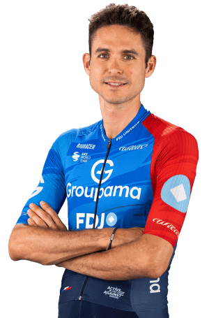

Rudy Molard
Datos personales
- Rudy Molard
- 17 de septiembre de 1989
- Francia
- GROUPAMA-FDJ UNITED
- 95

Datos equipos
- Groupama - FDJ United
- Groupama - FDJ
- FDJ
- Cofidis, Solutions Crédits
- Cofidis, le Crédit en Ligne
- CR4C Roanne
Multimedia
Equipo GROUPAMA-FDJ UNITED en la Vuelta Ciclista a España 2026.
Temporada 2025
| Recorrido | Puesto de Molard |
|---|---|
| San Maurizio Canavese – Ceres | 22.º |
| Monzón Templario – Zaragoza | 97.º |
| Alfaro – Valdezcaray | 33.º |
| Sendaviva – Larra-Belagua | 29.º |
| Laredo – Los Corrales de Buelna | 28.º |
| Cabezón de la Sal – L'Angliru | 33.º |